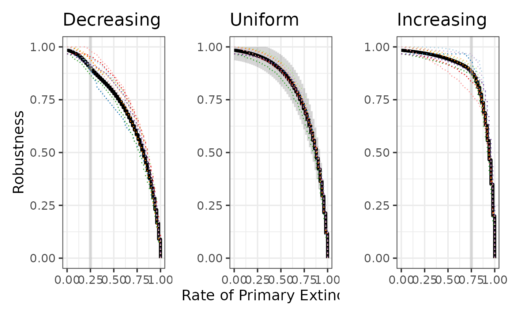

vignettes/plot_article.Rmd
plot_article.Rmd
rob_lbm_unif <- robustness_lbm(con, pi, rho, nr, nc)
rob_lbm_dec <- robustness_lbm(con, pi, rho, nr, nc, ext_seq = "decreasing")
rob_lbm_inc <- robustness_lbm(con, pi, rho, nr, nc, ext_seq = "increasing")Simulating 10 networks from the same parameters
set.seed(1234)
my_lbm <-
replicate(10, simulate_lbm(con, pi, rho, nr, nc))Computing the uniform empirical robustness
rob_emp_unif <- lapply(
seq(10), function(m) robustness_emp(my_lbm[,m]$A))Now we can simulate some extinction based on extinction by blocks for known blocks.
rob_emp_dec <- lapply(
seq(10),
function(m) {
robustness_emp(my_lbm[,m]$A,
ext_seq = "decreasing",
method = "block",
block = my_lbm[,m]$Z)
}
)
rob_emp_inc <- lapply(
seq(10),
function(m) {
robustness_emp(my_lbm[,m]$A,
ext_seq = "increasing",
method = "block",
block = my_lbm[,m]$Z)
}
)
colb <- brewer.pal(10, "Paired")
plot(rob_lbm_dec, size = 1.5) +
ylab("Robustness") +
xlab("") +
plot(rob_emp_dec[[1]], add = TRUE, lty = "dotted",
col = colb[1]) +
geom_vline(xintercept = .25, col = "grey", size= 1.5, alpha = .5)+
plot(rob_emp_dec[[2]], add = TRUE, col = colb[2], lty = "dotted") +
plot(rob_emp_dec[[3]], add = TRUE, col = colb[3], lty = "dotted") +
plot(rob_emp_dec[[4]], add = TRUE, col = colb[4], lty = "dotted") +
plot(rob_emp_dec[[5]], add = TRUE, col = colb[5], lty = "dotted") +
plot(rob_emp_dec[[6]], add = TRUE, col = colb[6], lty = "dotted") +
plot(rob_emp_dec[[7]], add = TRUE, col = colb[7], lty = "dotted") +
plot(rob_emp_dec[[8]], add = TRUE, col = colb[8], lty = "dotted") +
plot(rob_emp_dec[[9]], add = TRUE, col = colb[9], lty = "dotted") +
plot(rob_emp_dec[[10]], add = TRUE, col = colb[10], lty = "dotted") +
theme_bw(base_size = 15) +
ggtitle("Decreasing") +
plot(rob_lbm_unif, size = 1.5) +
ylab("") +
xlab("Rate of Primary Extinctions") +
plot(rob_emp_unif[[1]], add = TRUE, col = colb[1], lty = "dotted") +
plot(rob_emp_unif[[2]], add = TRUE, col = colb[2], lty = "dotted") +
plot(rob_emp_unif[[3]], add = TRUE, col = colb[3], lty = "dotted") +
plot(rob_emp_unif[[4]], add = TRUE, col = colb[4], lty = "dotted") +
plot(rob_emp_unif[[5]], add = TRUE, col = colb[5], lty = "dotted") +
plot(rob_emp_unif[[6]], add = TRUE, col = colb[6], lty = "dotted") +
plot(rob_emp_unif[[7]], add = TRUE, col = colb[7], lty = "dotted") +
plot(rob_emp_unif[[8]], add = TRUE, col = colb[8], lty = "dotted") +
plot(rob_emp_unif[[9]], add = TRUE, col = colb[9], lty = "dotted") +
plot(rob_emp_unif[[10]], add = TRUE, col = colb[10], lty = "dotted") +
theme_bw(base_size = 15) +
ggtitle("Uniform") +
plot(rob_lbm_inc, size = 1.5) +
xlab("") +
ylab("") +
plot(rob_emp_inc[[1]], add = TRUE, col = colb[1], lty = "dotted") +
geom_vline(xintercept = .75, col = "grey", size = 1.5, alpha = .5)+
plot(rob_emp_inc[[2]], add = TRUE, col = colb[2], lty = "dotted") +
plot(rob_emp_inc[[3]], add = TRUE, col = colb[3], lty = "dotted") +
plot(rob_emp_inc[[4]], add = TRUE, col = colb[4], lty = "dotted") +
plot(rob_emp_inc[[5]], add = TRUE, col = colb[5], lty = "dotted") +
plot(rob_emp_inc[[6]], add = TRUE, col = colb[6], lty = "dotted") +
plot(rob_emp_inc[[7]], add = TRUE, col = colb[7], lty = "dotted") +
plot(rob_emp_inc[[8]], add = TRUE, col = colb[8], lty = "dotted") +
plot(rob_emp_inc[[9]], add = TRUE, col = colb[9], lty = "dotted") +
plot(rob_emp_inc[[10]], add = TRUE, col = colb[10], lty = "dotted") +
theme_bw(base_size = 15) +
ggtitle("Increasing") 